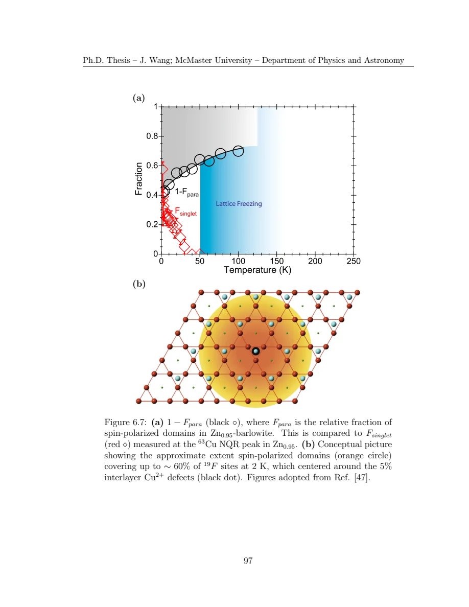

Wang · supplied source 2024 · chapter unit
8 · F NMR: correlate shift, rate and defect influence
The broad fast component is visible in joint space and supports a defect-domain interpretation.
The question: Why does a narrow line peak fail to summarize the full sample?
Before you start: the terms you need
- Quantum spin liquid candidate: a material tested against a quantum-disordered model; a null ordering signal is insufficient identification.
- K: local resonance shift, sensitive to a coupling-weighted static susceptibility.
- 1/T₁: recovery rate that samples fluctuations in the probe frequency window.
- ILT: constrained, regularized inference of a relaxation-rate distribution from recovery data.
- log-rate density: probability is the area in d log₁₀(1/T₁), not peak height.
See → explain → check
Follow the idea in 3 pictures.
Picture 1 / 3
Height and weight are different
Look for: A narrow component can dominate the peak while a broad one carries substantial integrated signal.
Swipe across the picture to read every label, or enlarge it below.
- Narrow main signal
- Broad fast signal
Conceptual distributions with no invented experimental curves.
Peak shift need not summarize the majority population.
Check the original: Original PDF p. 103 · Original PDF p. 108 · Original PDF p. 110
Picture 2 / 3
A joint map retains the correlation
Look for: The broad shifted region has different relaxation behavior.
Swipe across the picture to read every label, or enlarge it below.
- Shift / frequency
- Log rate
- Main + defect-influenced
Qualitative map only; inspect source contours for measured values.
Separating frequency and rate helps test a defect interpretation.
Check the original: Original PDF p. 106 · Original PDF p. 108 · Original PDF p. 109
Picture 3 / 3
Use the parent as a cross-check
Look for: Cu₄ has magnetic interlayer sites throughout.
Swipe across the picture to read every label, or enlarge it below.
- Zn₀.₉₅ broad component resembles Cu₄
- Joint deconvolution + site chemistry
- Defect-influenced domains
The last box is an interpretation, not a directly imaged domain map.
Its resemblance constrains the interpretation without fixing a unique spin pattern.
Check the original: Original PDF p. 112 · Original PDF p. 114 · Original PDF p. 115
Explain it back.
Try answering aloud before opening the explanation.
Why can 5% defects affect many more fluorine sites?
Each defect couples to an extended nearby environment and each fluorine sees several Cu spins. An affected nuclear fraction need not equal the chemical defect concentration.
Does a peak tending to zero show the full sample is nonmagnetic?
No. A broad shifted component can carry much of the integrated signal while the narrow near-zero component determines the peak position.
Go deeper Follow the full argument
Fluorine is local, but not a single-spin probe
Spin-one-half fluorine avoids the electric-quadrupole splitting that complicates larger-spin powder nuclei. Its transferred hyperfine response can involve twelve neighboring kagome Cu sites. The source’s simple local sum helps explain why singlet formation at only some Cu sites need not make fluorine fully inert: other neighbors can still contribute. However, the statistical argument assumes a pattern of singlet distribution and a coupling model; it is not a direct count of twelve independent identical neighbors in every disordered environment. The measured line grows broad while the main peak shifts toward zero, so the peak alone does not represent the majority of the full distribution.
Original PDF p. 99 · Original PDF p. 100 · Original PDF p. 101 · Original PDF p. 102 · Original PDF p. 103 · Original PDF p. 104
Use C(f,R), then inspect the deconvolution
Recovery at several frequencies shows that the rate changes across the line. Combining these measurements reveals a broad faster component that separates from the narrow main signal. The source uses a two-dimensional double-Gaussian fit to estimate its frequency center, widths, rate and weight, then compares the reconstructed map with data and residuals. The low-temperature asymmetric tail is imperfectly represented by that Gaussian model. Main-peak one-dimensional values largely follow the narrow component because it dominates the peak height, whereas integrated population weight can favor the broader component. Width, height and area must remain distinct.
Original PDF p. 105 · Original PDF p. 106 · Original PDF p. 107 · Original PDF p. 108 · Original PDF p. 109 · Original PDF p. 110
Test the defect interpretation with the parent compound
The broad component’s shift and dynamics resemble Cu₄ barlowite, in which interlayer sites are magnetic Cu rather than predominantly nonmagnetic Zn. This supports the thesis’s interpretation that interlayer Cu defects induce surrounding polarized domains in Zn₀.₉₅ material. The fitted affected fluorine fraction approaches roughly 60% at 2 K, despite a much smaller chemical defect concentration. The domain sketch illustrates how a sparse defect may affect many sites; it is not a measured sharp boundary. The detailed spin configuration remains uncertain. The Cu singlet weight and the fluorine domain weight refer to different probes and selections, so they are compared cautiously rather than assumed to be exact complementary fractions.
Original PDF p. 110 · Original PDF p. 111 · Original PDF p. 112 · Original PDF p. 113 · Original PDF p. 114 · Original PDF p. 115
Translate the mathematics Essential equations and their meaning
Kpeak = (fpeak − f₀)/f₀
Symbols: fpeak: spectral peak frequency; f₀: zero-shift reference frequency.
For a broad heterogeneous line this characterizes its peak position, not necessarily the average or all local shifts.
Read the evidence Guided original source pages

Original PDF p. 109

Original PDF p. 111
What the evidence supports—and where it stops
- Domain configuration and boundaries are unresolved; Gaussian weights and probe geometry constrain quoted fractions.
Source version, reading coverage and preservation
All substantive text in Chapters 1–7, the reprinted research article and numerical appendices read; original working kernels, equations and key result figures visually checked.
Reviewed body pages: 15, 16, 17, 18, 19, 20, 21, 22, 23, 24, 25, 26, 27, 28, 29, 30, 31, 32, 33, 34, 35, 36, 37, 38, 39, 40, 41, 42, 43, 44, 45, 46, 47, 48, 49, 50, 51, 52, 53, 54, 55, 56, 57, 58, 59, 60, 61, 62, 63, 64, 65, 66, 67, 68, 69, 70, 71, 72, 73, 74, 75, 76, 77, 78, 79, 80, 81, 82, 84, 85, 86, 87, 88, 89, 90, 91, 92, 93, 94, 95, 96, 97, 98, 99, 100, 101, 102, 103, 104, 105, 106, 107, 108, 109, 110, 111, 112, 113, 114, 115, 116, 117, 118, 119, 120, 121, 122, 123. Personal acknowledgements omitted from teaching content. Bibliographies and external supplements not independently re-read; only material actually present in the thesis is covered.
Source SHA-256: 80ad8aaad2ce3f48320bef046c30907939f8018990292aa5ebb7e5269d912da2. Original file bytes preserved locally; public scientific page images are rendered from that source.
Thesis - Wang - 2024 - Disordered spin liquids - NMR and inverse Laplace analysis.pdf